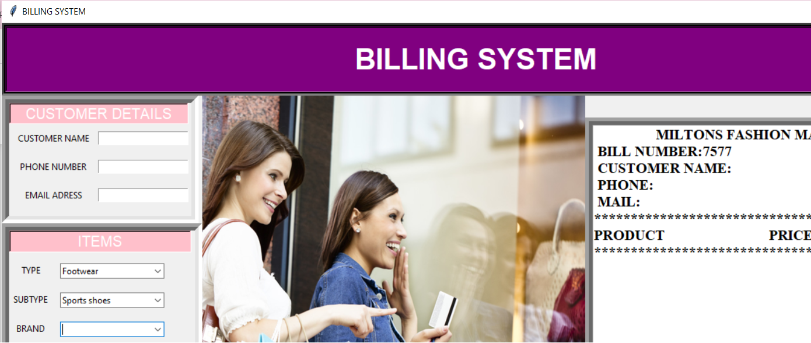

Billing System
November 2022

Overview
- The Billing System application is a Python-based desktop application designed to facilitate the billing process in a fashion retail environment. Built using the Tkinter library for the GUI and PIL for image processing, the application allows users to add items to a cart, calculate totals including tax, and generate, save, and clear bills.
Key Features
User Interface
- Customer Details: Fields for entering customer name, phone number, and email.
- Item Selection: Dropdown menus for selecting item categories, subcategories, brands, quantities, and prices.
- Bill Area: A text area for displaying the bill details, including customer information and a list of items with prices and quantities.
Functionalities
- Add to Cart: Adds selected items to the bill with calculated price and quantity.
- Remove Item: Removes the last added item from the bill.
- Final Bill: Validates customer information and generates the final bill including subtotal, tax, and total amount.
- Save Bill: Saves the generated bill to a text file.
- Clear All: Clears all entries and resets the bill area.
- Close: Closes the application.
Validation
- Ensures all required customer details are filled.
- Validates email format and phone number length.
- Checks if there are items in the cart before finalizing the bill.
Implementation Details
- GUI Layout: The application window is divided into multiple frames for customer details, item selection, bill display, and control buttons. This modular layout improves readability and user interaction.
- Text Variables: Used to store and manage input data and computed values, such as customer information, selected items, quantities, prices, total amount, and tax.
- Bill Text Management: Functions to generate and manage the bill text, ensuring a consistent format and accurate data display.
- File Operations: Ability to save the bill as a text file for record-keeping and future reference.
Technical Stack
- Programming Language: Python
Libraries
- Tkinter for the graphical user interface.
- PIL (Python Imaging Library) for handling images.
- Random for generating random bill numbers.
- OS for file operations.